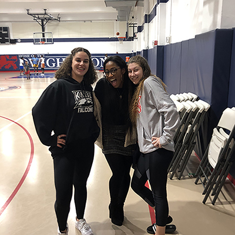

My History
I was born May 29th 2000, I am Gemini Sun, Aries Moon and Leo Rising. These three signs together means that I am a very passionate person.
Below is my Natal Chart from Cafe Astrology

| Zodiac | House | Number |
|---|---|---|
| Leo | Ascendant | 1 |
| Sagittarius | Pluto | 5 |
| Aquarius | Neptune | 6 |
| Uranaus | 7 | |
| Aries | Moon | 9 |
| Taurus | Saturn | 10 |
| Jupiter | ||
| Gemini | Venus | |
| Sun | 11 | |
| Mars | ||
| Mercury |
I am from Brooklyn, New York so I consider myself a "City Girl" through and through. After graduation I hope to back to New York for work.
I am currently a junior at the University of Miami, I am a Public Relations and Meida Management major with minors in Psychology and Finance.
I am a communications professional with various industry experience.
I enjoy understanding an organization’s business and communication needs and developing strategic plans to increase their audience engagement and revenue. My communication style easily adapts to various audiences whether consumer, business to business or not for profit.
I have a strong work ethic, believe in continuous education to improve skills and constantly stay abreast of the latest trends to consistently demonstrate creativity and offer strategic solutions that meet current market demands.